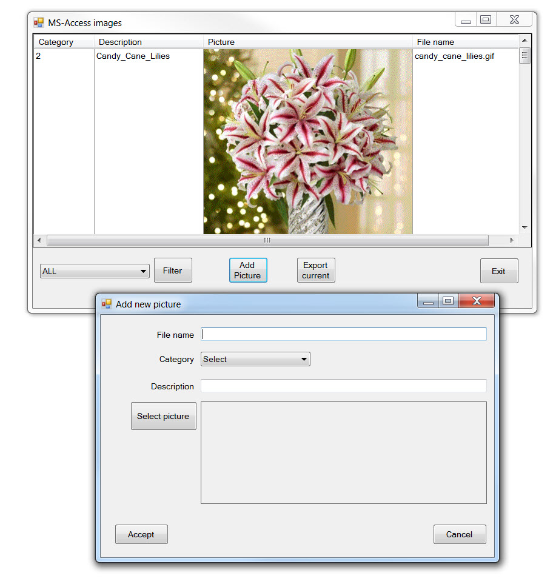
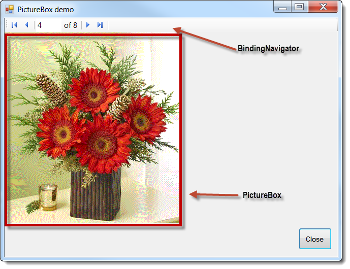

Description
This article details how to take a image file and insert the file into a table in an MS-Access database along with retrieving images from an MS-Access database and viewing the images in a DataGridView without using Visual Studio data wizards. Before going any farther storing and retrieving images from databases is nothing new and is not a bad idea for databases such as MS-SQL Server, Oracle or IBM-DB2 but not a wise idea for MS-Access. Even though it is unwise to store images in MS-Access (mainly because they are not durable and known for corruption) developers will do so anyways a) because it's beyond their control b) they are willing to take the chance. An alternate method for MS-Access is to store images in a local folder and in the database reference them with a field for description, and base file name. The application would "know" where the images resides either from a configuration setting or perhaps in a table inside of the same database.
If you truly have to store images inside of an MS-Access database table be forewarned that with MS-Access 2007 and higher adding an image to a record from within MS-Access will not only store the image but also a header so conventional methods to read this data works up to displaying the data in a control such as a PictureBox or image column in a DataGridView. I did some experiments and created code that will remove the header after getting the byes from the table but not one header is exactly the same size so this is possible but not practical. If on the other hand you add or update images inside of an MS-Access table write code to add or update the field containing the image bytes.
If you search the web for just one decent example for storing and reading back images I did not find one that would allow a developer to work with an example without struggling to get the found example to work. So the VS2012 solution (now VS2017) included shows how to insert new records and read them back out into a DataGridView. I did not include updating since an update is only different by the syntax of the SQL and a delete is a standard delete. I did include a function for exporting an image out to disk.
Database layout, there are two tables, one to store images and one reference table. The table for images has the following columns. A standard primary key, a category numeric field which uses the reference table for text, a Ole Object column to store our images, BaseName (the file name with no path or file extension), FileExtension which stores the file extension with no period. All the above columns are required for the Windows form project. There is also a column for a description, or perhaps a comment etc.
There are two projects (which I normally do for MSDN articles which is good practice), one Windows form project to insert and display data with conventional form controls while the second project handles all database operations. Please note I use a special class for connection to the database yet you can use you normal OleDb method to connect to data, mine is modeled as a Singleton pattern.
Whenever there were long lines of code I broke them up across several lines for ease of reading and learning.
NEW 02/22/2019 Somehow the database didn't get included in the last release, fixed.
NEW 08/25/2018 added FlowLayoutPanel example and now in VS2017
NEW 12/06/2013 added second example that shows how to work with a PictureBox control.
NEW 12/27/2013 placed a
third example here that shows how to log when a user viewed a image.
